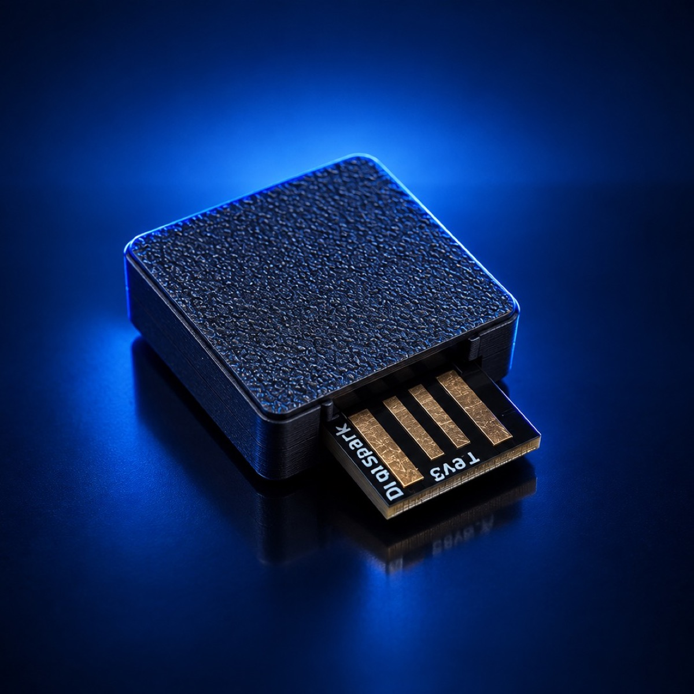

The Hack Lab · Dispositivo HID educacional
Payload
Dispositivo educacional de injeção de teclado (HID) — aprenda como funcionam ataques via USB, na prática e em ambiente controlado.

01 — Conteúdo
O que vem na caixa
| Payload | Dispositivo montado e testado individualmente antes do envio (Digispark / ATtiny85) |
|---|---|
| Firmware | Firmware educacional pré-instalado |
| Case | Case protetor impresso em 3D |
| Payload Lab | Acesso à trilha de estudo (abaixo) |
02 — Trilha de estudo
Payload Lab
Cinco módulos, do conceito à defesa. Cada módulo pode ser estudado na ordem apresentada.
-
Módulo 1 — Como funciona um ataque HID
HID (Human Interface Device) é a classe de dispositivos USB que inclui teclados e mouses. Quando você conecta um teclado, o sistema operacional não pede driver, não mostra aviso e não pergunta nada: ele confia. Um ataque de injeção de teclado explora exatamente essa confiança. O dispositivo se apresenta ao computador como um teclado comum e, em vez de esperar um humano digitar, "digita" sozinho uma sequência de comandos — em segundos, à velocidade da máquina.
O que torna a técnica eficaz não é nenhuma vulnerabilidade de software, e sim o modelo de confiança do USB: o computador não tem como distinguir um teclado real de um microcontrolador que finge ser um. Os comandos rodam com as permissões do usuário que está logado, sem instalar nada e sem tocar o disco necessariamente. A limitação prática é que a sessão precisa estar desbloqueada e o layout de teclado configurado no alvo precisa bater com o que o payload espera — caso contrário os caracteres saem trocados.
A ideia foi popularizada pelo USB Rubber Ducky, da Hak5, que trazia uma linguagem própria de scripts (DuckyScript) num pen drive só para isso. Em 2014, a pesquisa BadUSB (SR Labs) mostrou que o firmware de dispositivos USB comuns pode ser reprogramado para se comportar como teclado. Hoje o mesmo efeito se consegue com hardware de poucos reais: o ATtiny85 / Digispark (base do Payload), o Raspberry Pi Pico com o projeto pico-ducky, o Malduino, e implantes escondidos dentro de cabos de carregamento aparentemente normais, como o O.MG Cable.
Por isso um dispositivo USB de origem desconhecida é um vetor de risco concreto:
- Não dá para confiar na aparência — um "pen drive" pode ser um teclado, e um "cabo" pode carregar um implante com Wi-Fi.
- Um único dispositivo pode se declarar como teclado, armazenamento e placa de rede ao mesmo tempo.
- O vetor mais comum é social: um pen drive "perdido" num estacionamento ou recepção. Num estudo clássico da Universidade de Illinois, cerca de 48% dos drives espalhados pelo campus foram conectados por quem os encontrou.
- Assim que é conectado, o dispositivo age em um ou dois segundos — antes de qualquer suspeita.
Nos próximos módulos você monta o ambiente, escreve seu primeiro payload e, no Módulo 5, vê o outro lado: como bloquear esse tipo de ataque em um parque de máquinas.
-
Módulo 2 — Configurando o ambiente
O Payload é programado pela Arduino IDE — a mesma ferramenta de qualquer projeto Arduino. Como o chip é um ATtiny85 numa placa Digispark, e não um Arduino Uno, é preciso adicionar o suporte a essa placa: ele não vem de fábrica na IDE.
Um detalhe importante: a Digistump, fabricante original do Digispark, encerrou as atividades e o endereço oficial do pacote saiu do ar. Use o fork mantido pela comunidade (ArminJo), que ainda funciona e corrige a compatibilidade com as versões atuais da IDE.
- Instale a Arduino IDE 2.x a partir de arduino.cc/en/software.
- Abra Arquivo → Preferências e cole a URL abaixo no campo "URLs adicionais para Gerenciadores de Placas".
- Vá em Ferramentas → Placa → Gerenciador de Placas, busque por Digistump AVR e instale o pacote Digistump AVR Boards.
- Em Ferramentas → Placa, selecione Digispark (Default – 16.5MHz).
- Instale o driver USB conforme o seu sistema (veja abaixo).
https://raw.githubusercontent.com/ArminJo/DigistumpArduino/master/package_digistump_index.jsonO driver USB depende do sistema:
- Windows — rode o
Install Digistump Drivers.batque acompanha o pacote, ou use o Zadig para instalar o driver libusb do bootloader. Sem ele o Windows não reconhece a placa na hora de gravar. - Linux — crie a regra udev
/etc/udev/rules.d/49-micronucleus.rules(disponível no repositório do fork) e recarregue comsudo udevadm control --reload-rulespara gravar semsudo. - macOS — nenhum driver é necessário.
Na hora de gravar, a placa fica desconectada. Diferente de um Arduino comum, você clica em Carregar primeiro; quando a IDE mostrar "Plug in device now… (will timeout in 60 seconds)", aí sim conecte o Payload. O bootloader micronucleus só fica ativo por cerca de 5 segundos a cada vez que a placa é energizada — é nessa janela que a gravação acontece.
Para confirmar que está tudo certo, carregue o exemplo Blink (Arquivo → Exemplos → Digispark_Examples → Start), ajustando o pino do LED embutido —
P0ouP1, conforme a revisão da placa. Se o LED piscar, o ambiente está pronto para o Módulo 3. -
Módulo 3 — Seu primeiro payload
O "hello world" do HID: o Payload abre o Bloco de Notas do Windows e digita uma mensagem. Não há nada malicioso aqui — o objetivo é ver, na prática, a sequência que todos os outros payloads seguem: esperar, abrir algo, digitar.
#include "DigiKeyboard.h" // biblioteca de teclado do Digispark void setup() { // 1. Espera o computador reconhecer o dispositivo como teclado DigiKeyboard.delay(3000); // 2. Win + R: abre a caixa "Executar" do Windows DigiKeyboard.sendKeyStroke(KEY_R, MOD_GUI_LEFT); DigiKeyboard.delay(600); // 3. Digita "notepad" e confirma com Enter DigiKeyboard.print("notepad"); DigiKeyboard.sendKeyStroke(KEY_ENTER); DigiKeyboard.delay(1200); // 4. Escreve a mensagem (sem acento: o layout assumido e US) DigiKeyboard.print("Este PC ficou desbloqueado e sem ninguem por perto."); DigiKeyboard.sendKeyStroke(KEY_ENTER); DigiKeyboard.print("Um dispositivo USB digitou isso sozinho em 5 segundos."); } void loop() { // vazio: o payload roda uma vez, no setup() }Trecho a trecho:
#include "DigiKeyboard.h"— traz a biblioteca que faz o Digispark se apresentar como um teclado USB.DigiKeyboard.delay(3000)— pausa de 3 segundos. Diferente dodelay()comum, esta versão mantém a conexão USB viva enquanto espera; é o tempo que o sistema leva para reconhecer o "teclado".sendKeyStroke(KEY_R, MOD_GUI_LEFT)— pressiona uma combinação: a tecla R junto com a tecla Windows (GUI). É o atalho que abre o "Executar".print("notepad")— "digita" o texto caractere por caractere, como um humano faria.sendKeyStroke(KEY_ENTER)— pressiona só o Enter, sem texto.setup()roda uma única vez quando a placa é energizada;loop()fica vazio de propósito — não queremos o payload repetindo em loop infinito.
A mensagem está sem acento porque a
DigiKeyboardassume um teclado US:ç,ãeésairiam trocados num teclado ABNT2. Para texto em português é preciso mapear os scancodes manualmente ou usar uma lib alternativa — por ora, escreva em ASCII.Grave seguindo o Módulo 2: clique em Carregar e conecte a placa quando a IDE pedir. Assim que ela é reconhecida, os 3 segundos correm e o Bloco de Notas abre digitando sozinho. Em um treinamento, troque o texto por uma orientação da política de segurança da empresa — ver a frase aparecer sozinha comunica o risco melhor que qualquer slide.
-
Módulo 4 — Payloads de conscientização
Dois payloads prontos para usar em treinamento: conecte na frente da pessoa e deixe ela ver acontecer. Os dois só abrem uma janela e digitam texto — nada é instalado, baixado ou alterado no sistema.
Exemplo 1 — Alerta de segurança
Abre o Bloco de Notas e escreve um aviso. É o payload do Módulo 3 com mais linhas, usando
println()para quebrar a linha a cada frase.#include "DigiKeyboard.h" void setup() { DigiKeyboard.delay(3000); // Abre o Bloco de Notas pelo "Executar" DigiKeyboard.sendKeyStroke(KEY_R, MOD_GUI_LEFT); DigiKeyboard.delay(600); DigiKeyboard.print("notepad"); DigiKeyboard.sendKeyStroke(KEY_ENTER); DigiKeyboard.delay(1200); // Aviso em ASCII (o layout assumido e US) DigiKeyboard.println("=== ALERTA DE SEGURANCA ==="); DigiKeyboard.println(""); DigiKeyboard.println("Sua estacao ficou desbloqueada e sem supervisao."); DigiKeyboard.println("Isso bastou para um dispositivo USB digitar este aviso."); DigiKeyboard.println(""); DigiKeyboard.println("Bloqueie a tela sempre que sair: Win + L."); } void loop() {}Exemplo 2 — Gerador de senha forte
Abre o PowerShell e roda um comando de uma linha que monta uma senha aleatória e a deixa na tela.
#include "DigiKeyboard.h" void setup() { DigiKeyboard.delay(3000); // Win + R e chama o PowerShell com um comando embutido DigiKeyboard.sendKeyStroke(KEY_R, MOD_GUI_LEFT); DigiKeyboard.delay(600); DigiKeyboard.println("powershell -NoExit -Command \"-join ((33..126) | Get-Random -Count 20 | ForEach-Object {[char]$_})\""); } void loop() {}O comando pega 20 números entre 33 e 126 (a faixa de caracteres imprimíveis da tabela ASCII), converte cada um no caractere correspondente e junta tudo numa senha de 20 posições. O
-NoExitmantém a janela aberta com a senha à mostra; ajuste o-Countpara mudar o comprimento.Use estes payloads só em máquinas da sua organização e com as pessoas cientes de que é um treinamento — a senha aparece em texto puro na tela, então não serve para gerar segredo real numa máquina que não é sua. O contraponto (como bloquear tudo isso) vem no Módulo 5.
-
Módulo 5 — Boas práticas de defesa
O ponto que orienta toda a defesa: um ataque HID é um teclado, não um disco. Bloquear pen drive de armazenamento e política de DLP para arquivos não impedem um payload de digitar comandos — esses controles nem veem o dispositivo. A proteção real vem de outras camadas.
1. Reduza a janela de oportunidade
- Bloqueio de tela automático e o hábito de
Win + Lao se levantar. O payload precisa de uma sessão desbloqueada — sem ela, quase todos falham. - Menor privilégio. O código roda como o usuário logado; sem admin local, o estrago fica limitado e instalações são barradas.
- Acesso físico. Em recepção, quiosque e chão de fábrica, use bloqueadores de porta USB e libere só as portas necessárias.
2. Controle quais dispositivos USB podem conectar
- Windows — via GPO (Device Installation Restrictions) ou Intune, negue por padrão a instalação de novos dispositivos e mantenha uma lista de permissão por hardware ID ou classe. Dá para barrar a classe HID de dispositivos não homologados.
- Linux —
USBGuardaplica uma allowlist por descritor USB; novos dispositivos ficam bloqueados até aprovação. - macOS — desde o Ventura, todo acessório USB/Thunderbolt novo precisa ser aprovado no prompt "Permitir que acessórios se conectem".
- Algumas plataformas de gestão (Intune, EPM) permitem recusar dispositivos novos enquanto a tela está bloqueada — fecha o cenário do "pluga e sai".
3. Trave a execução
- AppLocker ou WDAC para permitir só binários e scripts aprovados.
- PowerShell em Constrained Language Mode, com Script Block Logging e transcrição ligados.
- Para usuários padrão, desabilite a caixa Executar e o acesso a
cmd/powershellquando não forem necessários.
4. Detecte o que passar
- EDR e Sysmon pegam a cadeia suspeita (
explorer.exe→powershell.exelogo após conectar um dispositivo) e a linha de comando usada. - Ferramentas que barram digitação em velocidade sobre-humana — DuckHunt no Windows,
uskipno Linux. - Alerta quando um segundo teclado é enumerado numa estação que já tem um.
Nenhuma camada sozinha resolve; juntas, elas tiram do payload o tempo, o dispositivo e a execução de que ele depende.
- Bloqueio de tela automático e o hábito de
03 — Ficha técnica
Especificações
| Microcontrolador | ATtiny85 |
|---|---|
| Interface | USB (emulação HID) |
| Programável via | Arduino IDE |
| Case | Case protetor impresso em 3D |
04 — Leia antes de usar
Uso exclusivo em ambientes controlados e de sua propriedade
Este produto é destinado a fins educacionais e treinamentos de conscientização em segurança. Conectar este dispositivo em computadores de terceiros sem autorização pode configurar crime de invasão de dispositivo informático (Art. 154-A do Código Penal).
05 — Dúvidas frequentes
Perguntas frequentes
Preciso saber programar para usar?
Não. O Payload Lab foi feito para ensinar do zero — você não precisa ter nenhuma experiência prévia com programação. A trilha de estudo te guia desde a instalação do ambiente até escrever seu primeiro payload, passo a passo.
O firmware de fábrica já faz alguma coisa sozinho?
Sim, mas de forma simples: assim que conectado, o Payload exibe uma mensagem educativa (sem nenhuma ação além disso). Isso já demonstra o conceito básico de injeção de teclado na prática, antes mesmo de você programar qualquer coisa.
Posso reprogramar quantas vezes eu quiser?
Sim, sem limite. O Payload é totalmente reprogramável via Arduino IDE — você pode apagar o firmware original e escrever quantos payloads diferentes quiser, testar, errar e recomeçar à vontade.